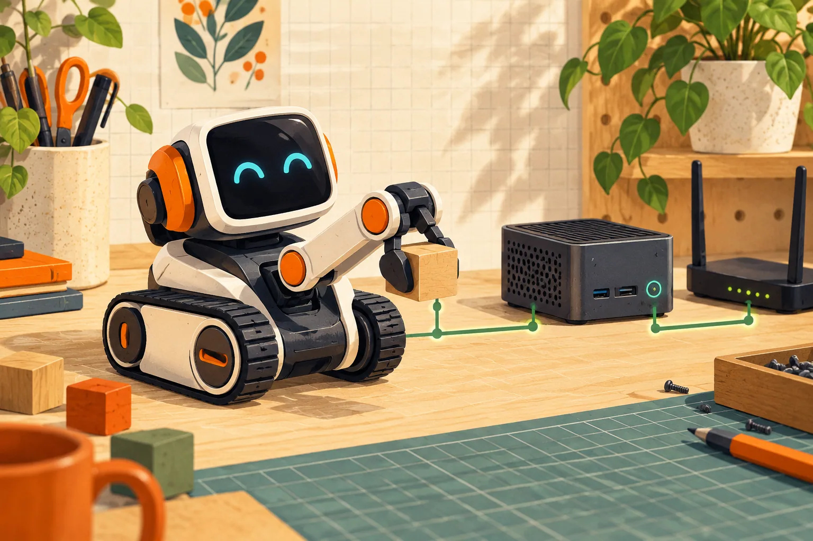

wire-pod
用社区语音服务重新使用 Vector 机器人，并可接入知识问答后端。
- 语音助手
Anki / Digital Dream Labs Vector 机器人，按 setup 支持范围
要匹配固件与配对流程；不能仅有服务端就认定任何 Vector 可恢复。

这是一条 具体改造路线 · 最近核对公开资料 2026-10-20
从闲置到能用，它改变了什么
原来卡在哪里
Vector 机器人部分语音能力依赖外部服务，云端可用性影响持续使用。
改完能做什么
使用自己运行的 wire-pod 服务接收语音并处理请求，可配置知识服务。
它把服务依赖转移到自己维护的主机，不能修复机器人电池、显示屏或网络硬件。Vector 1.0/2.0 的部署入口应跟随当前官方说明，服务端证书、网络和设备配置均是验收点。选择云模型还是其他后端会改变隐私、费用和离线能力，不能把‘自建服务’等同于全链路离线。
适合你，如果
已有可用 Vector，并能长期运行及维护局域网服务的人。
先别选，如果
机器人本体无法开机，或不愿维护任何常开主机的人。
做完以后这样检查
- 记录设备版本，检查服务端与机器人网络连通性
- 验证本地语音命令及可选知识问答
- 重启服务端与设备后重测，记录外网依赖
这是给你的验收清单；KitAgain 目前还没有亲手完成这些硬件测试。
你要准备什么
- 怎么改
- 云服务替代
- 上手难度
- 高难度
- 拆机
- 不需要
- 焊接
- 不需要
- 云 API / 服务
- 知识服务可选
- 成本金额
- 待核价 / UNKNOWN
还可能要花的钱
- 常开服务器
这些价格还没有核实。软件开源，也可能仍要买转接件、主板、存储，或承担电费和服务费。
最坏会怎样，怎么退回来
数据丢失风险: 可能发生; 刷坏或无法启动的风险: 依操作路径. 这是按操作路线给出的提醒，还没有在每台设备上实测。
保留配对与固件信息；仅重新部署服务端不保证解决固件或硬件故障。
先收藏恢复资料（无已核验链接）
这条信息现在可信到哪一步
E1 · 源码与部署文档
README 明确 Vector 1.0/2.0 与生产机器人支持，提供安装 wiki 与故障排查入口。
KitAgain 目前没有亲手测试这台设备，也没有把别人的成功截图当成我们的复现。
- 维护状态
- 仓库未归档
- GitHub 最后 push
- 2026-10-15T01:04:49Z
- 仓库许可证
- MIT
未归档或近期 push 不能证明型号无故障；镜像迁移也不等于停止维护。
根许可证或 README 声明不代表固件、模型、品牌和第三方组件均采用相同许可。
项目账号与已核实作者主页
- kercre123 · GitHub ↗ — 源码仓库所有者账号；不据此推断其为唯一作者
仓库所有者账号用于追溯项目来源；作者社交账号只有在项目资料、仓库或作者主页能确认归属时才收录。
这些链接分别能帮你做什么
- 上游项目文档 ↗2026-10-20
先用它了解项目能做什么、怎样开始，以及作者写明的限制。
https://github.com/kercre123/wire-pod/blob/main/README.md
原始页面可能使用中文或英文。准备动手时，再按你的准确型号、固件和地区版本核对一次。